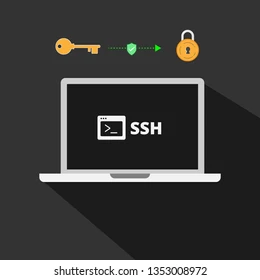

O que é SSH e para que serve esse protocolo de segurança na internet
Basicamente, o protocolo SSH permite que os usuários controlem e modifiquem seus servidores remotos na internet. Dessa forma, ele surgiu para substituir os primeiros protocolos de rede, como Telnet e rsh, que não forneciam proteção suficiente contra ataques cibernéticos.
SSH é a sigla para Secure Shell ou Secure Socket Shell e ele nada mais é que um protocolo de rede que oferece aos usuários, principalmente aos administradores de sistema, uma maneira segura de acessar um computador em uma rede aberta, como a internet.
O protocolo SSH utiliza o modelo cliente-servidor, conectando um aplicativo cliente Secure Shell, que é o onde a sessão é exibida, com um servidor SSH que, da mesma forma, é onde a sessão é executada.
O Secure Shell fornece autenticação de senha forte e autenticação de chave pública – e criptografada – e assim, depois disso, realiza comunicações de dados entre dois computadores conectados.
O ssh também cria túneis seguros para outros protocolos, ou seja ele utiliza diferentes combinações de tecnologia para assegurar a comunicação entre dois pontos por meio de um túnel.
Como exemplo, é possível citar os túneis para protocolos de aplicativos como sessões gráficas do X Window System com segurança.
O ponto forte do ssh é a criptografia e, por isso, os administradores de rede o utilizam para gerenciar sistemas de forma remota.
Além disso, também é a criptografia que permite que eles se conectem a outro computador em uma rede, executem comandos e movam arquivos de um computador para outro.

Para entender melhor o que é SSH, saiba que ele possui em três camadas:
Camada de transporte: responsável por estabelecer uma comunicação
Camada de autenticação: responsável por comunicar os métodos de autenticação suportados ao cliente. Além disso, ela também realiza o processo de autenticação de um usuário.
Camada de conexão: responsável por gerenciar a comunicação entre as máquinas após a autenticação bem-sucedida.